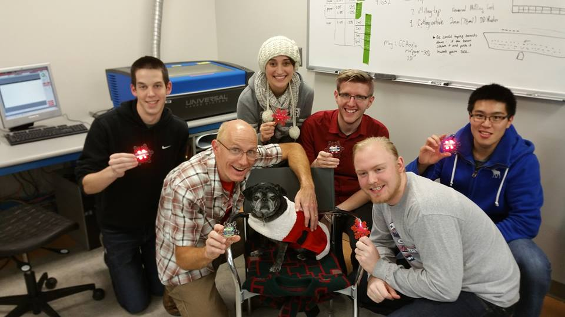
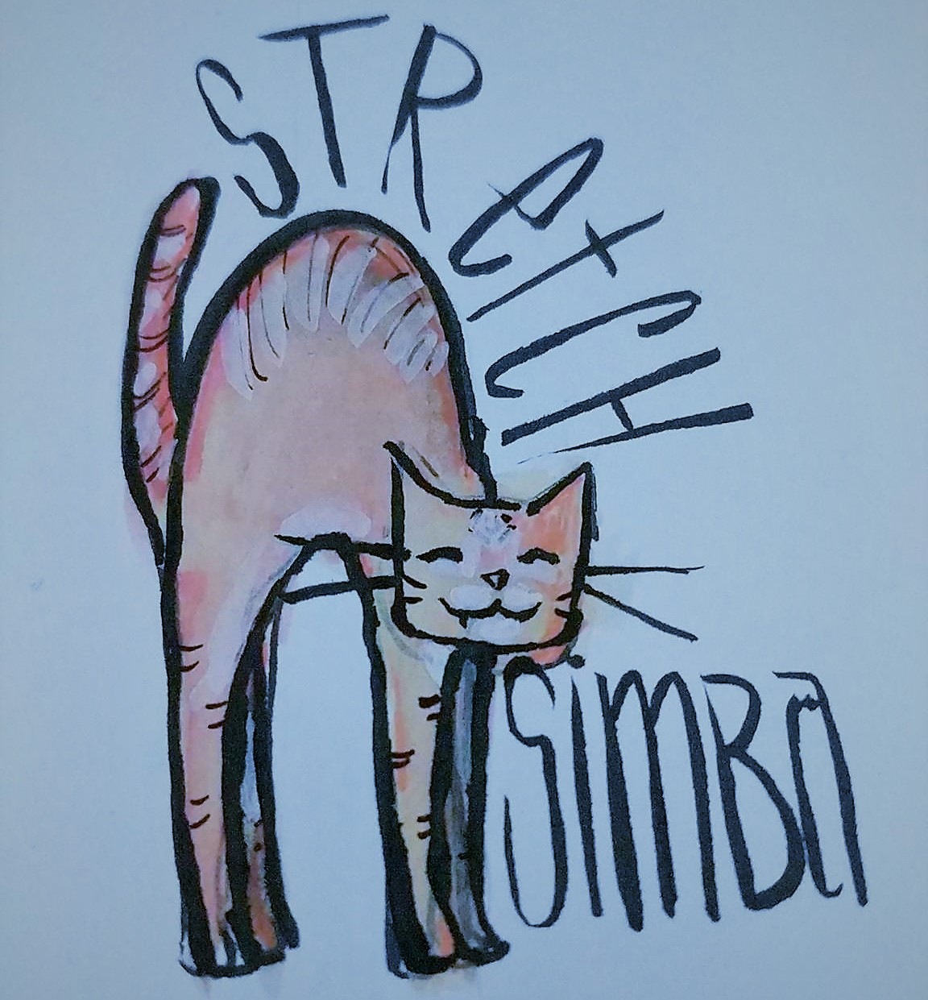
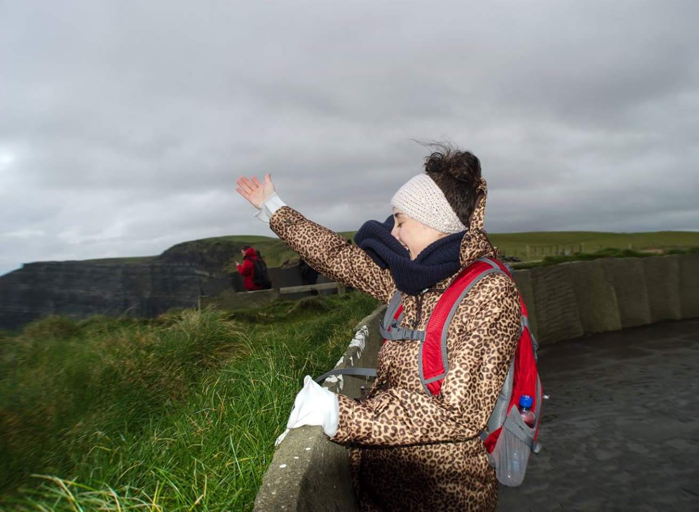

<div class="mdl-grid portfolio-max-width">
    <div class="mdl-cell mdl-cell--12-col mdl-card mdl-shadow--4dp">
        <div class="mdl-card__title">
            <h2 class="mdl-card__title-text">About Me</h2>
        </div>
        <div class="mdl-card__media">
            <div class="article-border"></div>
        </div>
        <div class="mdl-card__supporting-text">
            <strong>Get to know me</strong>
            <span>Interests, hobbies and habits. Not everything that follows will be related to tech... just most of it.</span>
        </div>
        <div class="mdl-grid portfolio-resume">
            <div class="mdl-cell mdl-cell--6-col">
                <div class="mdl-typography--headline">Penn State Makers Club 2015</div>
                
                <div class="mdl-card__supporting-text">I like to tinker. Here's a picture of some ornaments we made using a laser cutter, some solder, wires, leds, a battery and Christmas spirit.</div>
            </div>
            <div class="mdl-cell mdl-cell--6-col">
                <div class="mdl-typography--headline">Boe-Bot</div>
                
                <div class="mdl-card__supporting-text">I'm currently tinkering with a Boe-Bot robot kit to learn about embedded software and robotics.</div>
            </div>
            <div class="mdl-cell mdl-cell--12-col">
                <div class="mdl-typography--headline">React</div>
                <div class="mdl-card__supporting-text">I'm currently learning React on <a href="https://www.udemy.com/react-redux/learn/v4/content" target="_blank">Udemy</a> and <a href="https://www.codecademy.com/learn/react-101" target="_blank">Codecademy</a>. If you're brand new to coding, I highly recommend Codecademy! They were my entry to programming (aside from learning HTML for my Neopets page). If you have a little more experience, take a look at Udemy. They have a lot of low cost courses.</div>
            </div>
            <div class="mdl-cell mdl-cell--12-col">
                <div class="mdl-typography--headline">Data Structures & Algorithms</div>
                <div class="mdl-card__supporting-text"><a href="https://leetcode.com/" target="_blank">LeetCode</a>, <a href="https://leetcode.com/" target="_blank">Firecode</a>, and "Cracking the Coding Interview" have been my go-tos for strengthening my knowledge of data structures and algorithms. Preparing for interviews? These are the sites to use!</div>
            </div>
            <div class="mdl-cell mdl-cell--6-col">
                <div class="mdl-typography--headline">Fitness</div>
                <div class="mdl-card__supporting-text">I go to the gym about 3 times a week. I start off with some cardio to get the heart pumping, then switch over to a little bit of lifting. Starting Strength and StrongLifts 5x5 program have influenced my routine. I am also getting more into stretching and yoga.</div>
            </div>
            <div class="mdl-cell mdl-cell--6-col">
                <div class="mdl-typography--headline">Philanthropy</div>
                <div class="mdl-card__supporting-text">I am always interested in hearing about how I can help others. Most recently, I worked with Family Gateway (Dallas, Texas) and lead 12 of my coworkers in collecting funding and supplies to help displaced families. At the beginning of the school year, we contributed over 30 backpacks filled with supplies. For Halloween, Thanksgiving, and Christmas, we worked to contribute costumes, over 1 ton of food, and more than 100 toys. There is truly no greater feeling than that of improving the lives of those around you. If we haven't been the person in need, surely we have known them. I've been fortunate to have experienced kindness from so many others, it's only right that I give back.</div>
            </div>
            <div class="mdl-cell mdl-cell--6-col">
                <div class="mdl-typography--headline">Art</div>
                
                <div class="mdl-card__supporting-text">All doodles on this site will be my own. I love painting and drawing. My kitties inspire me often.</div>
            </div>
            <div class="mdl-cell mdl-cell--6-col">
                <div class="mdl-typography--headline">Nature</div>
                
                <div class="mdl-card__supporting-text">I am in love with nature. Don't get me wrong, I love my job, but after a long day of staring at a screen, all I want is to be surrounded by trees and mountains. My first hiking trip was to Glendalough in Ireland (I studied in Ireland for 4 months). I've been hooked since.
            </div>
        </div>
    </div>
</div>